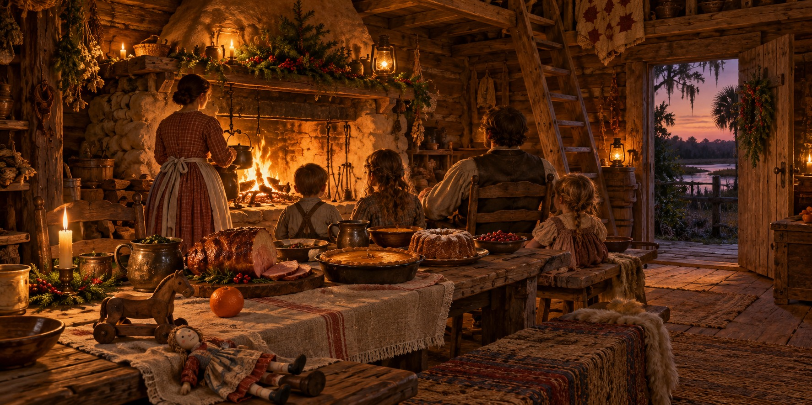

Holidays on the Florida Frontier
How Pioneer Families Marked the Passages of the Year When the Work Paused and the Joy Was Real

The Florida pioneer year was not all work. It could not be, because people who never paused for celebration eventually forgot what they were working for. Frontier holidays were simpler and more food-centered than today’s, rooted in the farm’s rhythms and the church calendar. They needed no purchased decoration, only family, the best food the homestead could produce, and the understanding that today was different.
Christmas: The Year’s Great Day
Christmas was an important holiday for many families, and preparation began weeks ahead. The ham that had hung in the smokehouse since the fall killing was taken down and judged. Sweet potatoes went into pie, and white flour, if the family could get it, into a pound cake. Molasses candy was boiled and pulled on a greased board, and it disappeared within hours.
Children’s gifts were handmade: a carved wooden toy, a rag doll sewn from scraps, an orange from the homestead’s own trees. Families who had not seen their nearest neighbors since the last church meeting gathered at whichever cabin had the most room, and no one hurried the children to bed.
The Fourth of July
The Fourth was a civic holiday. Families traveled from scattered homesteads to a central place, brought food, and spent the day in patriotic ceremony and practical festivity. Speeches came from whoever had the inclination and standing, and in many settlements the Declaration of Independence was read aloud. The shooting match was one form of entertainment: men who lived with a rifle competed at set distances for a modest prize and a reputation that lasted for weeks. A community feast ended the day.
Sugarcane Grinding
Not every celebration was a formal holiday. In the fall, when sugarcane was ready to harvest and the weather cooler, neighbors gathered at the homestead with the cane press. A mule walked in circles turning the press, the juice went into an iron kettle and was boiled all day, skimmed as it darkened from yellow to amber to brown. Children chewed fresh stalks, ate the cooled skimmings as candy, and had warm syrup over cornbread, one of the genuine luxuries of the pioneer table.
The Smaller Celebrations
Family gatherings, harvests and church occasions also offered reasons to pause ordinary work. Practices differed by household, faith and period. A holiday meal or a shared cane grinding could become a remembered event because it brought people together, rather than because every Florida family celebrated it in the same way.
Quick Facts
| One major holiday | Christmas for many Christian households |
|---|---|
| Christmas food | Smoked ham, sweet potato pie, pound cake, molasses candy |
| Christmas gifts | Simple and handmade: a carved toy, a rag doll, an orange |
| Fourth of July | Speeches, a reading of the Declaration, shooting matches, community feast |
| Cane grinding | Fall community occasion: mule-driven press, iron kettle, fresh syrup |
| Gathering pattern | Families traveled to a central place and shared food |
Did You Know?
Pioneer children could look forward to an orange from the homestead’s own tree.
Fourth of July shooting matches earned winners a reputation for weeks.
Skimmings from the cane kettle were eaten as candy.
Vocabulary
Cane grinding: crushing sugarcane to extract juice for syrup.
Molasses candy: a taffy-like candy made by boiling molasses and pulling it.
Shooting match: a community marksmanship contest.
Discussion Questions
1. Why did pioneer families treat holidays as more than a break from work?
2. How does the cane grinding show work and celebration combined?
Related Articles
FLH-0056 — The Florida Smokehouse
Sources
Ste. Claire, Dana. Cracker: The Cracker Culture in Florida History. Museum of Arts and Sciences, Daytona Beach, 1998.
Hilliard, Sam Bowers. Hog Meat and Hoecake: Food Supply in the Old South, 1840–1860. Southern Illinois University Press, 1972.
Dudley Farm Historic State Park, Newberry, FL. Living history demonstrations including cane grinding.
Florida Memory. State Library and Archives of Florida. floridamemory.com
Florida State Parks — Sugarcane and farm traditions at Dudley Farm